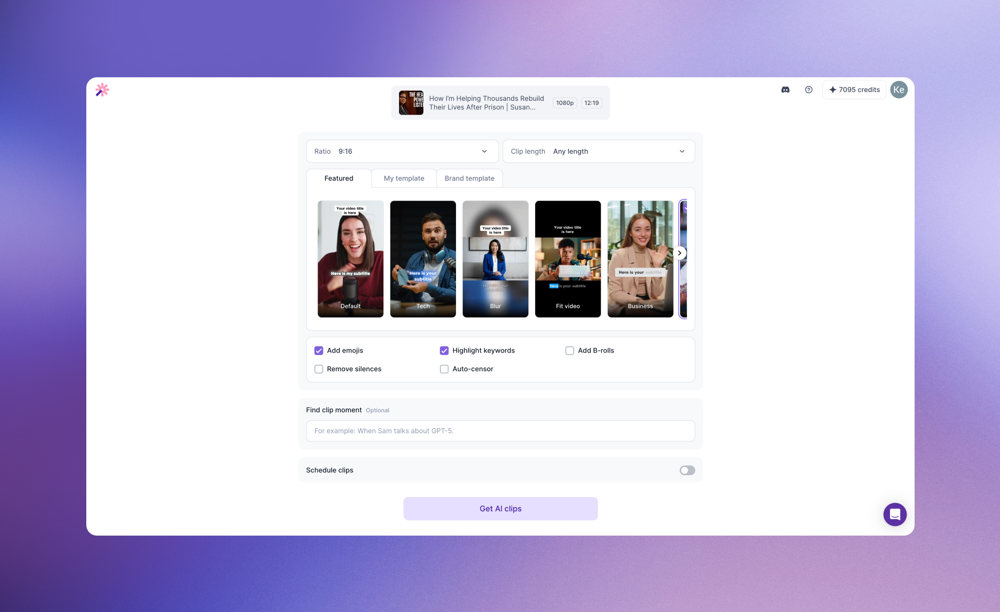
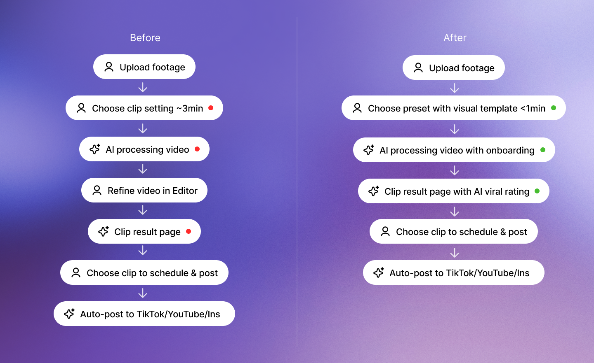
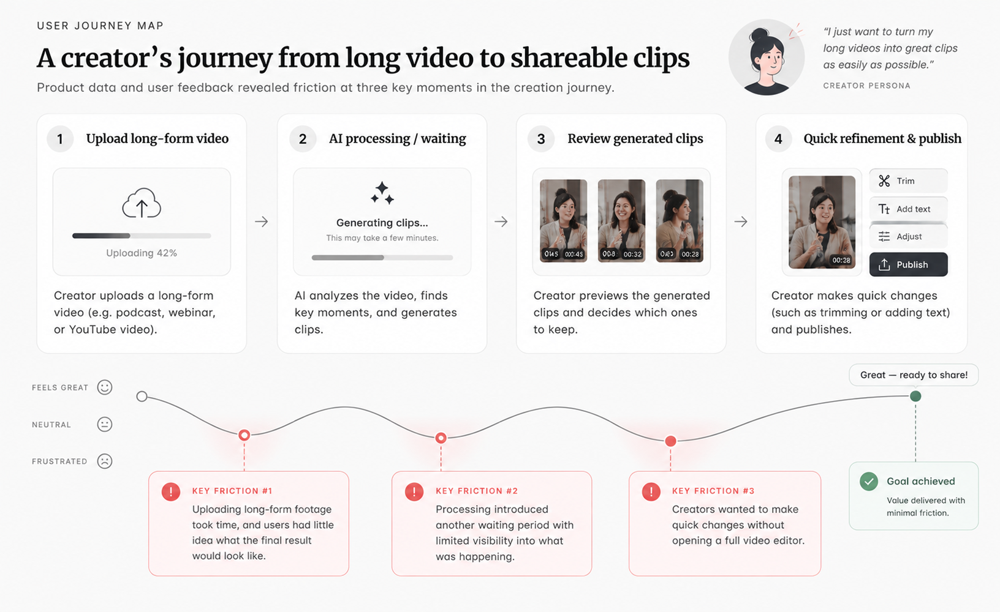
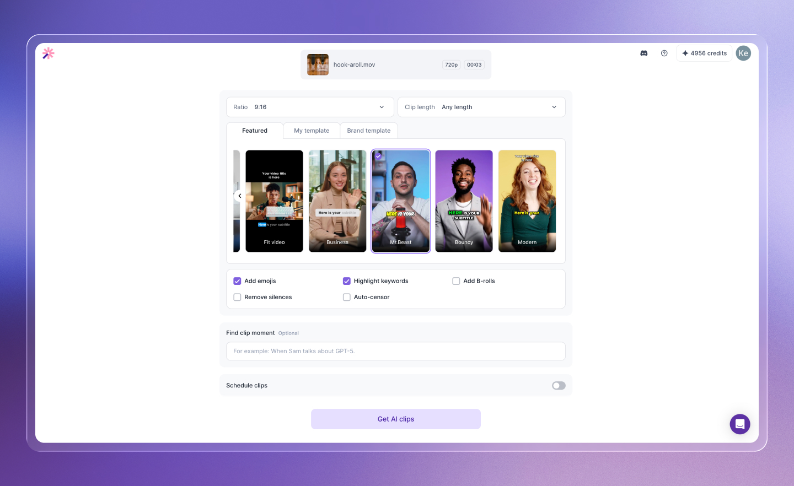
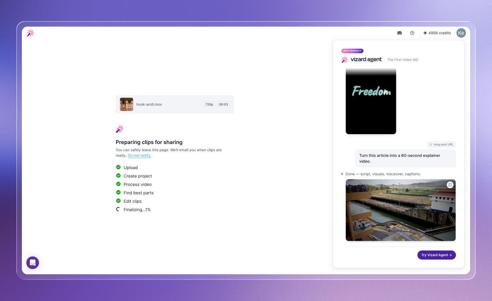
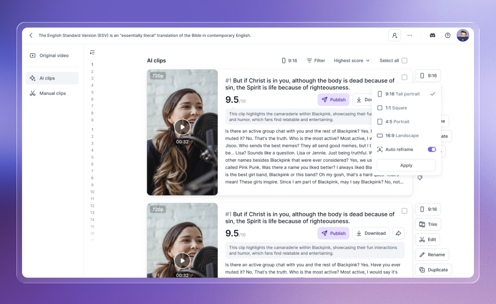
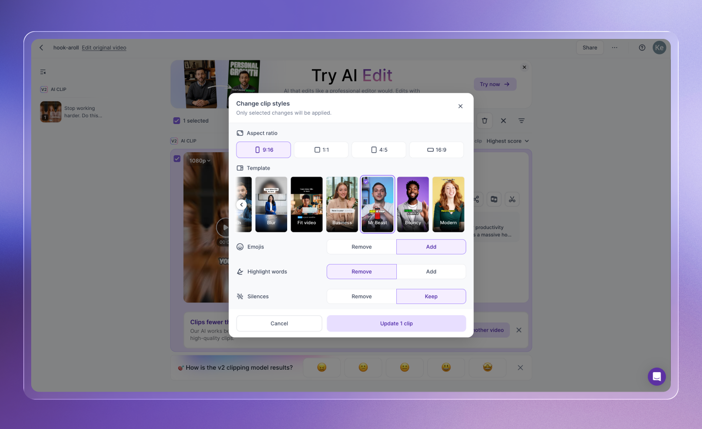
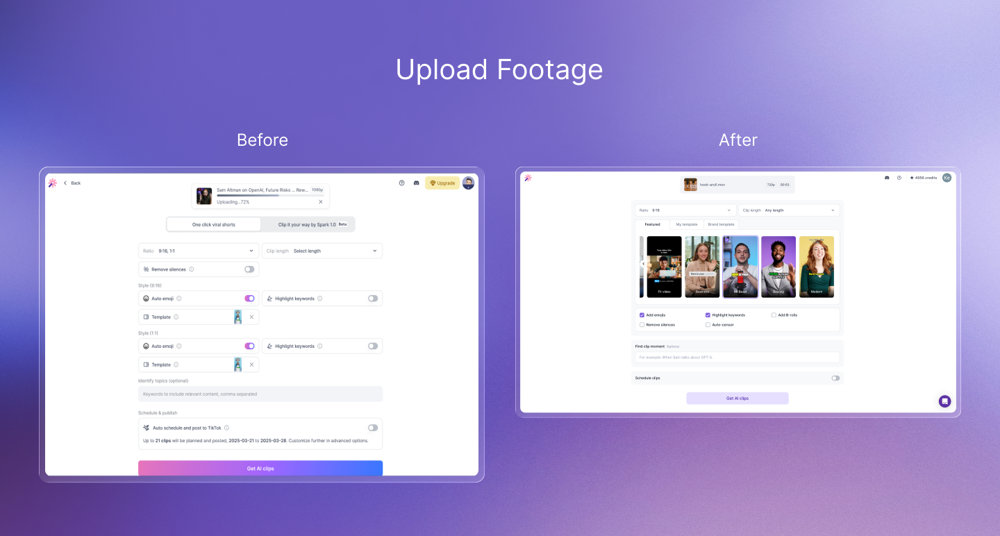
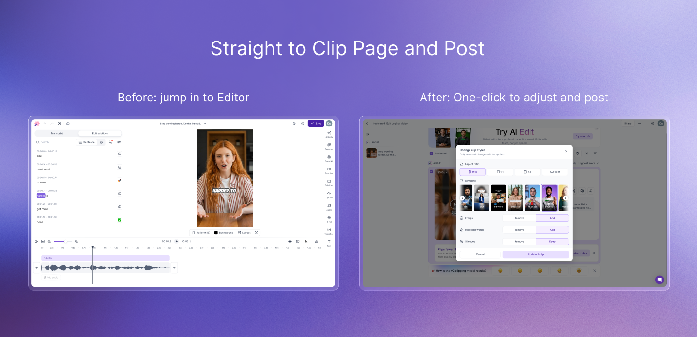

Case Study
Vizard
Streamlining Video Creation from Upload to Publish
Redesigned Vizard's core creation journey for 3M+ users, helping creators turn long-form footage into publish-ready social clips with less manual editing and clearer control over AI.

The Product Shift
AI is changing the role of the video editor
Instead of asking creators to manually find highlights, trim footage, remove silence, add captions, and format content for each platform, Vizard can automate much of that production work.
That shifted my core design question:
I defined one principle to guide the redesign:
AI does the editing. Creators make the decisions.
AI handles
Finding highlights, creating short clips, removing silence, generating captions, and reformatting content.
Creators decide
Which clip is worth posting, what visual direction fits their content, whether the result feels right, and what ultimately gets published.
This became the foundation for redesigning the experience across Upload → AI Processing → Review → Publish.

Where Users Were Dropping Off
Friction at three critical moments in the journey
Product data and user feedback revealed friction at three key moments in the creation journey.
Before AI creation
Uploading long-form footage took time, but users had little idea what the final result would look like.
While AI was working
Processing introduced another waiting period with limited visibility into what was happening.
After clips were generated
Creators wanted to make quick changes without opening a full video editor.
Rather than adding more editing features, I focused on improving these three moments.

01
Show value before the result
The original experience asked users to upload a long video and wait before seeing any meaningful output. That meant we were asking for commitment before demonstrating product value.
I introduced visual template selection during upload, allowing creators to preview different editing styles while their footage was still uploading.
The experience changed:
Instead of treating upload as dead time, it became the first creative decision in the workflow.

02
Design around AI latency
AI processing could take several minutes for long-form footage. Instead of treating that delay as a generic loading state, I designed different experiences around user intent.
Returning users
Could leave the page and receive an email when their clips were ready.
New users
Could stay and learn what the AI was doing through lightweight onboarding and product education.
The goal wasn't to hide AI latency. It was to make the waiting time feel intentional.

03
Let creators refine without re-editing
Once AI generated the clips, creators still wanted control over the final result. But user feedback showed that many changes were lightweight:
Remove silence · Add emojis · Change template · Apply enhancements
Opening a full editor for these actions created unnecessary friction. I introduced a Quick AI Edit panel directly on the clip result page, allowing creators to refine a clip without leaving the review and publishing workflow.
Review → Refine → Publish

The Business Problem
V1 worked for users — but created a new business problem
After launching the first redesign through a grayscale A/B test, we discovered an unexpected behavior. Users tended to make AI edits one at a time:
Remove silence → Generate
Add emojis → Generate
Change template → Generate
From the user's perspective, this interaction felt natural. But every submission triggered another AI request. The interface was unintentionally encouraging behavior that increased model usage and processing cost.
This changed the problem from a pure UX challenge into a product and business tradeoff:
How might we preserve creator control without encouraging unnecessary AI generations?
The V2 Redesign
From repeated commands to intent collection
The problem wasn't the feature set. It was the interaction model.
For V2, I redesigned the panel around intent collection. Instead of submitting every change independently, creators could select multiple adjustments first and apply them together.
A small interaction change created an important shift. The interface now encouraged users to communicate their full editing intent before asking AI to act — preserving flexibility for creators while reducing unnecessary model requests.
It also gave product, engineering, and design a shared framework for evaluating the solution:
User effort · Editing flexibility · AI cost

Impact
Better for creators, more sustainable for the business
For creators
- Earlier visibility into what AI would create
- Less uncertainty during long processing times
- Faster lightweight editing without entering the full editor
- More control over what ultimately gets published
For the business
- Fewer unnecessary repeat AI generations
- A more scalable interaction model for AI-assisted editing
- Better alignment between user behavior and AI infrastructure


Key Takeaway
Designing AI products isn't only about reducing clicks
It requires deciding where AI should automate, where human judgment still matters, and how the interaction model affects both the user experience and the economics of the system.
For Vizard, that meant shifting the product from a traditional editor with AI features toward an AI-native workflow built around creator intent.